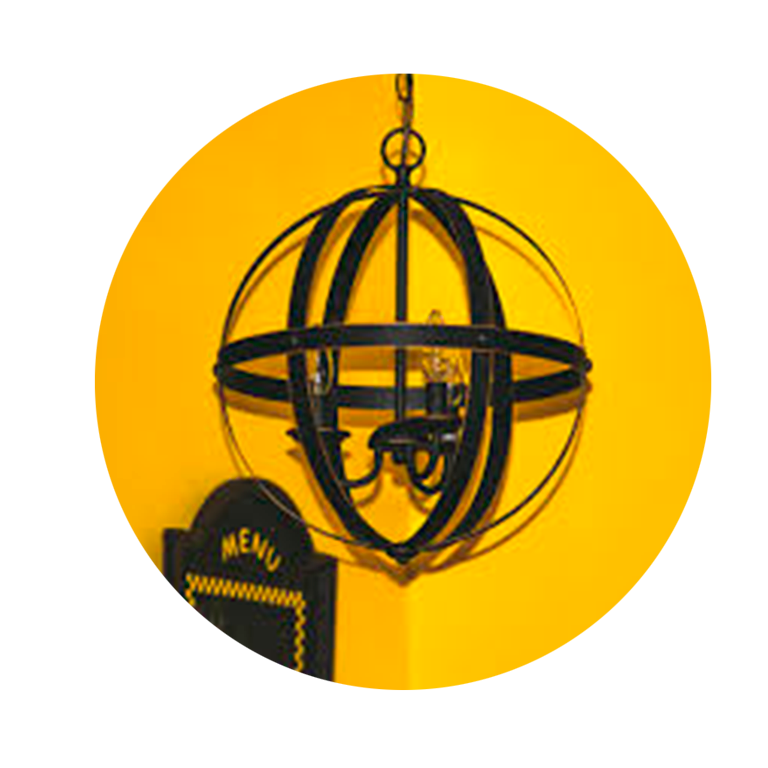
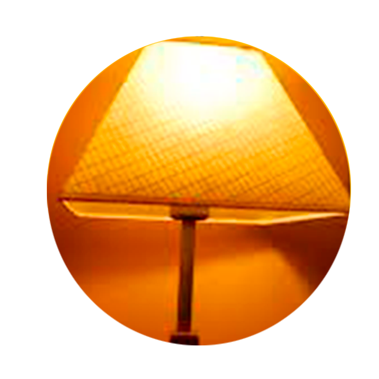
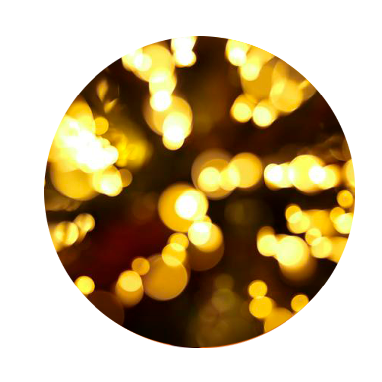

La iluminación de interiores es la culminación de una decoración. Aqui algunas ideas acerca de cómo iluminar una casa.
|  |  |  | |
|
1 Determinar la función de la iluminación
Lo primero que debe saber, es que función va a cumplir la luminaria en el espacio que desea ponerla. |
2 Tendencias en iluminación de interiores
Las tendencias en iluminación van desde le diseño moderno, original hasta el elegante. |
3 Iluminación LED
Ayuda al diseño sostenible de varias maneras.
4 Luces con cristales
Excelente para la decoración de múltiples espacios |